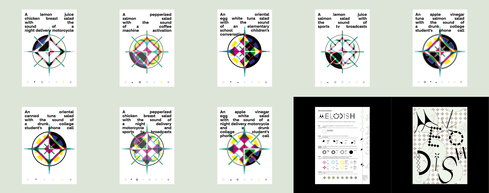
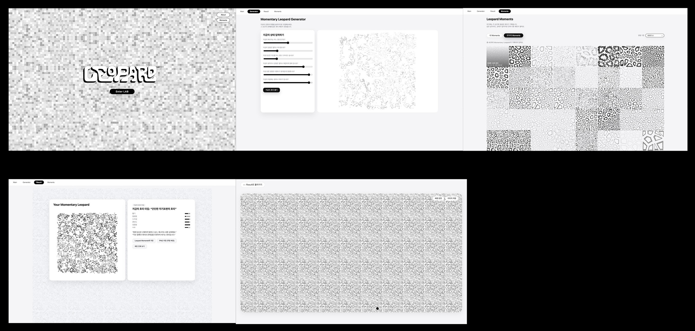
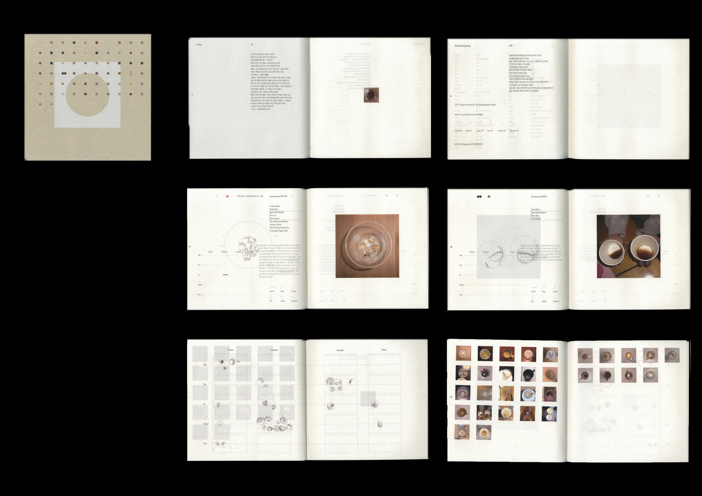
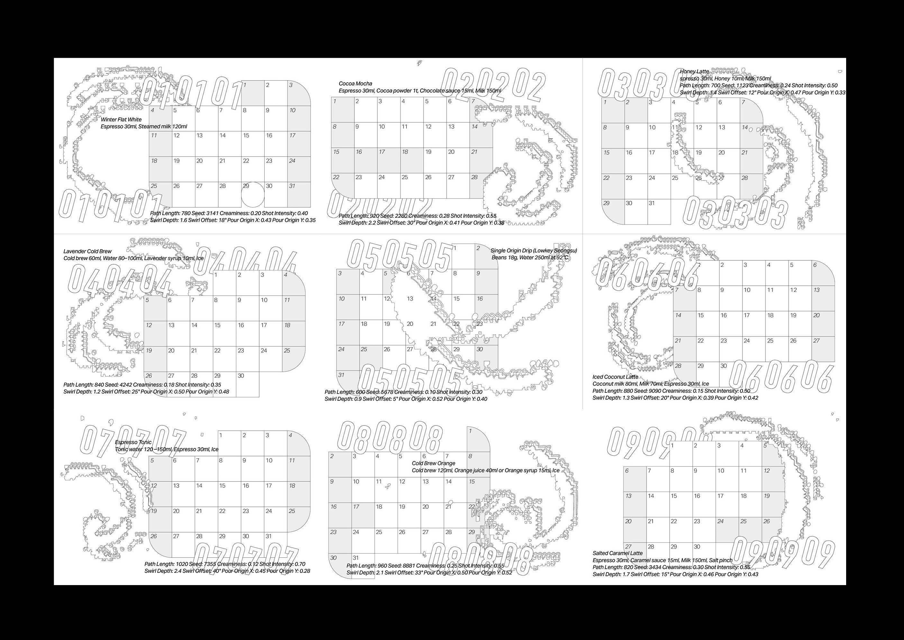

MELODISH
2023 · 개인작업
아침마다 먹는 샐러드를 소리로 치환 후 그래픽화한다. 소리의 시각화 방법론.

아침마다 먹는 샐러드를 소리로 치환 후 그래픽화한다. 소리의 시각화 방법론.

사용자가 직접 개입해서 최소한의 조작으로 호피를 생성하는 과정 자체를 보여주는 툴 + 실험실형의 제너레이티브 웹사이트. 호피는 원래 크고, 반복적이고, 강한 문양으로 인식된다. 하지만 이 프로젝트는 호피를 Voronoi + 도넛 형태로 분해해서, 얼룩의 최소 단위만 남긴 뒤 다시 조합한다. 즉, 문양의 면적과 화려함은 줄이되, ‘호피 같다’는 인지 가능성은 끝까지 유지하는 지점을 탐색하는 것이다. Leopard Lab은 호피를 가볍게 빌려 쓰는 기계이자, 최소 비용으로 현재의 정체성과 취향을 드러내는 실험 도구로 작동한다. 사용자는 웹 페이지 안에서 슬라이더 몇 개만 움직이지만, 그 결과로 얻는 것은 호피라는 강렬한 문화적 기호를, 미니멀한 단위로 쪼개서 쉽고 빠르게 자기 것으로 전유하는 경험이다.

잔이 비었다는 것은 그 안의 카페인이 사용자의 에너지(노동, 아이디어, 대화) 로 치환되었음을 의미한다. 사람마다 마시는 속도, 각도, 습관에 따라 잔여물의 형태는 다르게 나타나는지 인터뷰 후에, 이를 수집하여 개개인의 그래픽으로 재해석하고 맵핑한다. 재해석과 맵핑의 과정은 Zine의 형태로 아카이빙된다.

라떼 아트를 만드는 과정을 수학적 공식으로 정립한다. 월별 라떼 아트 레시피를 만들고, 그 레시피에 따른 월별 그래픽이 웹사이트를 통해 치환된다.